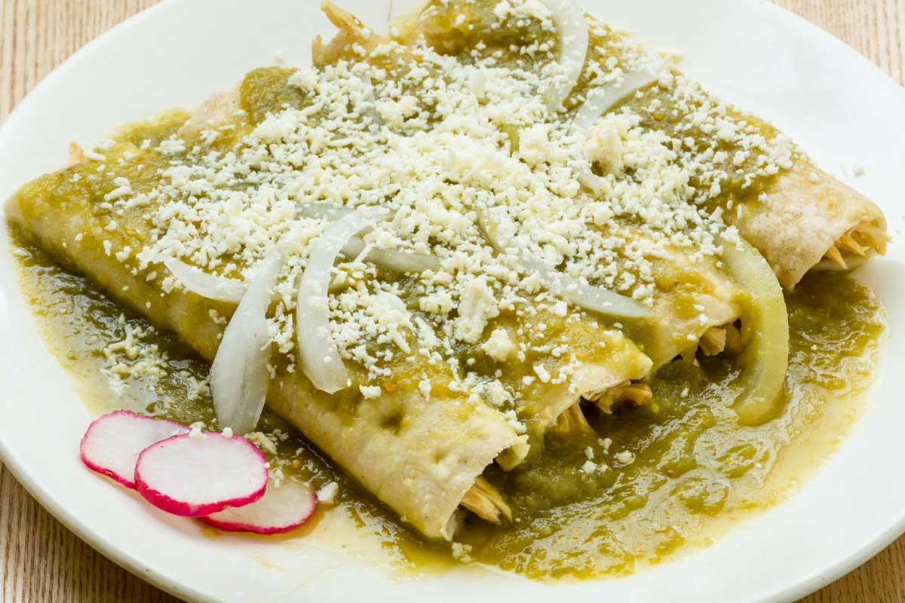

Servings
Ingredients
- 1/2 kilos chicken breast
- 1/2 onions
- 10 arbol chiles
- 7 tomatillos
- 1 clove garlic
- 1 sprig fresh cilantro, disinfected
- 1 romaine lettuce, in juliana
- 1 queso fresco
- 16 tortillas
- vegetable oil
- salt
- 1/4 cups sour cream
Steps
- First, cook the chicken with a piece of onion, water and salt. Since this cooked crumbles it.
- In a separate saucepan, cook the tomatoes and chilies for 5 minutes in boiling water.
- Now put in the blender, the boiled tomatoes, the chilies, the garlic, the cilantro and put it to season with salt.
- In a frying pan, fry the cooked meat in 2 tablespoons of hot oil until golden brown. Once it is golden, add a couple of tablespoons of the sauce to the meat.
- Heat a little oil in a pan, and through it, pass the tortillas on both sides, and then, pass it through the sauce. Then, refill it with the meat (1 or 2 tablespoons will be enough) and roll to shape the enchilada. Put them on the plates where you will serve the enchiladas.
Return to top
Return to Mexico Recipes
Return to Menu